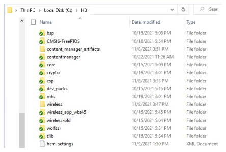
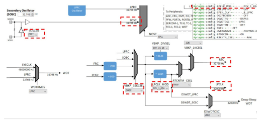
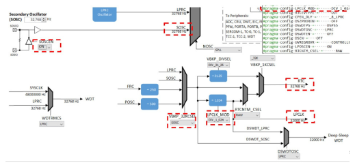

3.1.2.3 BLE Extended Advertisements
Getting Started with Peripheral Building Blocks
Adding UART -> BLE Extended Advertisements
Introduction
This document will help users enable Extended Advertisements (1M, 2M, Coded PHY - 125kbps) on the WBZ451 Curiosity Board. This example enables users to send application data using extended advertisements. Extended Advertisements are used to send more data than what legacy advertisements allow and also has long range functionality when using Coded PHY. Use of Extended Advertisements also enables the users to select between different PHYs (1M, 2M and LE Coded) which are not permitted when using legacy advertisements. In BLE, a peripheral or broadcaster always starts with advertisements. Advertisement packets enable a central or observer to discover a peripheral or broadcaster.
Extended Advertisements implemented in this example can be used for sending more data (2M PHY) or do range tests (Coded PHY). For testing these features, a scanner application can be used which is configured to scan the extended advertisement packets.
To save power, low power mode can be enabled. If conditions are met, then the WBZ451 will enter into sleep mode. The following sections discuss it in detail.
Users can choose to just run the precompiled Application Example hex file provided on the WBZ451 Curiosity Board and experience the demo or can go through the steps involved in developing this application from scratch.
These examples each build on top of one another. We strongly recommend that you follow the examples in order, to learn the basic concepts first before progressing to the more advanced topics.
Recommended Reading
Hardware Requirement
| Tool | Qty |
|---|---|
| WBZ451 Curiosity Board | 1 (2 if testing with a scanner) |
| Micro USB cable | 1 |
| Android/iOS Smartphone | 1 |
Optional Power Debugger/Multimeter/Oscilloscope to measure power
SDK Setup
Getting Started with Software DevelopmentSoftware Requirement
Tera TermSmartphone App
None
Programming the Precompiled Hex File or Application Example
Programming the hex file using MPLABX IPE
-
Import and program the Precompiled Hex file:
<Harmony Content Path>\wireless_apps_pic32cxbz2_wbz45\apps\ble\building_blocks\peripheral\ext_adv\hex\ext_adv.X.production.signed.hex -
For more details on the steps, go to Programming A Device .Note: Ensure to choose the correct Device and Tool information.
Programming the Application using MPLABX IDE
-
Follow the steps mentioned in Running a Precompiled Example
-
Open and program the Application:
<Harmony Content Path>\wireless_apps_pic32cxbz2_wbz45\apps\ble\building_blocks\peripheral\ ext_adv\firmware\ext_adv.X
For more details on how to find the Harmony Content Path, refer to Installing the MCC Plugin
Demo Description
This application example enables users to transmit Extended Advertisements at Coded PHY data rate of 125kbps. PDU types of ADV_AUX_IND and ADV_EXT_IND will be transmitted. Application data ("Microchip") is transmitted in Auxiliary packets (ADV_AUX_IND) and ADV_EXT_IND carries the Auxiliary Packet Information (ADV_AUX_IND) for the scanner to collect the data.
Demo will print "Ext Adv Enabled" indicating the successful start of Coded PHY Advertisements on TeraTerm. Coded PHY Advertisements are configured to be sent every 2 seconds.
BLE Extended Advertisements cannot be scanned using a smartphone app. This could be due to support of only legacy advertisements on the smartphone or the disabled extended advertisement APIs in the smartphone app.
Testing
- Using a micro USB cable, connect the Debug USB on the Curiosity boards to a PC
- Program the precompiled hex files or application examples:
- Board1: WBZ451 Curiosity Board with BLE Ext Adv Programmed
- Board2: WBZ451 Curiosity Board with BLE Scan Ext Adv Programmed
- Board1: Open TeraTerm and set the “Serial Port” to USB Serial Device and
“Speed” to 115200. Reset the board. Upon reset, "Ext Adv Enabled" should be
displayed on TeraTerm.
For more details on how to set the “Serial Port” and “Speed”, refer to COM Port Setup
- Similarly for Board2: Open TeraTerm and set the “Serial Port” to USB Serial
Device and “Speed” to 115200. Reset the board. Upon reset, "ExtAdv Scan
Enable Success” should be displayed on TeraTerm. "Microchip" should be
displayed as soon the WBZ451 module performs an
extended advertisement scan.

Current Consumption Measurement
Connect a Multimeter/Power Debugger/Oscilloscope to Power Measurement Header J6. If using a Power Debugger, users can use Data Visualizer to measure the current consumption.
Current measured in sleep/standby mode is 575.6 uA and average current consumption is around 723.0 uA.
Users of this package should go through the known issues document and understand the limitations, if any, of the current low power mode implementation.
Developing this Application from Scratch using MPLAB Code Configurator
- Setup the Harmony Framework. The EA release package has all the necessary components and should be downloaded individually from the link provided in the package. It is recommended to create the framework in the root directory. This framework looks like:
Create a new MCC Harmony Project
- To setup the basic components and configuration required to develop this
application, import component configuration:
<Harmony Content Path>\wireless_apps_pic32cxbz2_wbz45\apps\ble\building_blocks\peripheral\ext_adv\firmware\ext_adv.X\ext_adv.mc3For more details, refer to Import existing App Example Configuration
Note: Import and Export functionality of the Harmony component configuration will help users to start from a known working setup of the MCC configuration - To accept dependencies or satisfiers, select "Yes"
-
Verify if the Project Graph window has all the expected configuration
-
Enable Low Power mode by selecting Low Power Enable in BLE_Stack Configuration and selecting Yes to all pop ups
 then click on Window->MCC->Harmony->Clock Configuration and set the following clock configurations
then click on Window->MCC->Harmony->Clock Configuration and set the following clock configurations
Verify Advertisement Configuration
Select the BLE Stack component in the Project Graph and configure the following in the Configuration Options panel
Configuring UART
For more details on UART Configuration, refer to UART Hello World
Generating a Code
For more details on code generation, refer to MPLAB Code Configurator (MCC) Code Generation
Files and Routines Automatically Generated by the MCC
The OSAL, RF System and BLE System initialization routine executed during program initialization can be found in the project file. This initialization routine is automatically generated by the MCC.
The BLE stack initialization routine executed during Application Initialization can be found in project files. This initialization routine is automatically generated by the MCC. This call initializes and configures the GAP, GATT, SMP, L2CAP and BLE middleware layers.
Autogenerated Advertisement Data Format
| Source Files | Usage |
|---|---|
app.c |
Application State machine, includes calls for Initialization of all BLE stack (GAP,GATT, SMP, L2CAP) related component configurations |
app_ble\app_ble.c |
Source Code for the BLE stack related component configurations, code related to function calls from app.c |
app_ble\app_ble_handler.c |
All GAP, GATT, SMP and L2CAP Event handlers |
app_user_edits.c |
User Code Change instruction |
Header Files
-
ble_gap.hcontains BLE GAP functions and is automatically included inapp.c
Function Calls
- MCC generates and adds the code to initialize the BLE Stack GAP, GATT, SMP and L2CAP in APP_BleStackInit()
- APP_BleStackInit() is the API that will be called inside the Applications
Initial State APP_STATE_INIT in
app.c - RTC_Timer32Start() defined in
plib_rtc_timer.ccalls to start the RTC Timer clock to facilitate low power mode
User Application Development
Include
- User Action is required
definitions.hmust be included in all the files where UART will be used to print debug informationNote:definitions.his not specific to just UART but instead must be included in all the application source files where any peripheral functionality will be exercised
Starting Extended Advertisement in app.c
-
BLE_GAP_SetExtAdvEnable(true, 0x01, &extAdvEnableParam);
This API is called in the applications initial state APP_STATE_INIT in
app.c. Parameters for the extended advertisement should
be chosen. Below is an example.
Users can exercise other various BLE Advertisement functionalities by using the BLE Stack APIs